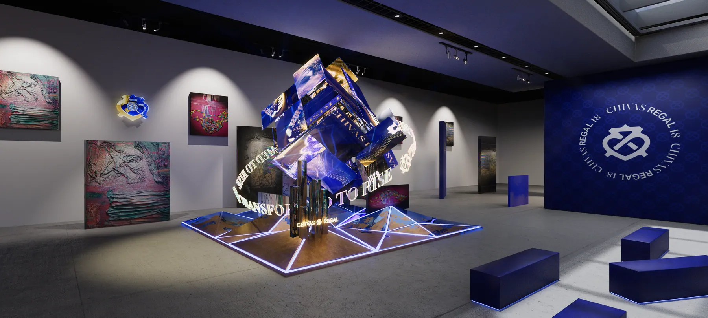

Học render Cycles và Eevee: chọn theo từng việc

Học render Cycles và Eevee không phải là chọn một và bỏ một. Cycles tính đường đi của ánh sáng nên cho kết quả đúng vật lý, hợp với ảnh sản phẩm và những bề mặt ăn tiền ở khúc xạ. Eevee tính xấp xỉ gần thời gian thực nên hợp với bản nháp, cảnh rộng và video dài. Thứ tự học nhanh nhất là hiểu ánh sáng trong Cycles trước, rồi mang hiểu biết đó sang Eevee để biết mình đang đánh đổi cái gì.
Phần lớn người mới học render theo chiều ngược lại. Họ bắt đầu ở Eevee vì nó hiện ra ngay, quen tay với việc kéo thanh trượt cho tới khi hình trông tạm được, rồi một ngày mở Cycles lên và không hiểu vì sao cùng một cảnh lại ra hai kết quả khác hẳn. Bài này sắp lại cho gọn: hai engine khác nhau ở đâu, việc nào thuộc về engine nào, và những lỗi lặp đi lặp lại ở cả hai phía.
Cycles và Eevee khác nhau ở đâu, nói gọn trong một đoạn
Khác biệt gốc nằm ở chỗ một bên mô phỏng ánh sáng, một bên vẽ lại hình. Mọi điểm mạnh và điểm yếu còn lại đều mọc ra từ đó, nên hiểu đoạn này rồi thì các lựa chọn phía sau gần như tự hiện ra.
Cycles tính theo đường đi của tia sáng
Cycles bắn tia từ máy quay vào cảnh, cho tia dội qua các bề mặt và cộng dần ánh sáng thu được. Vì nó mô phỏng đúng cách ánh sáng cư xử, bạn gần như không phải nói dối với nó: đặt một tấm phản quang bên trái thì vệt sáng xuất hiện đúng chỗ, dựng một ly thuỷ tinh có độ dày thì khúc xạ ra đúng hình. Giá phải trả là thời gian, và khi số tia chưa đủ thì ảnh bị nhiễu hạt.
Eevee dựng hình theo khung hình đang nhìn thấy
Eevee vẽ cảnh theo kiểu của một engine game: nó xử lý những gì nằm trong khung hình và dùng nhiều phép xấp xỉ để giả lập hiệu ứng ánh sáng. Các bản Blender gần đây đã cải thiện đáng kể phần bóng đổ và ánh sáng gián tiếp, nhưng bản chất vẫn là xấp xỉ. Thứ nằm ngoài khung hình thì engine không biết tới, nên một tấm phản quang đặt sau máy quay sẽ không tự động hiện vào bề mặt kim loại như ở Cycles.
Nói cách khác, Cycles trả lời câu hỏi ánh sáng sẽ đi thế nào, còn Eevee trả lời câu hỏi khung hình này trông ra sao nếu ta chấp nhận vài phép tính tắt. Hai câu hỏi khác nhau, nên không có engine nào đúng hơn engine nào. Chỉ có engine hợp hoặc không hợp với đề bài đang nằm trên bàn.
Khi nào dùng Cycles, khi nào dùng Eevee
Bảng dưới đây là cách chúng tôi phân việc trong thực tế khi làm ảnh sản phẩm và phối cảnh. Các con số thời gian chỉ là ước lượng trên một máy để bàn phổ thông có card đồ hoạ rời, cảnh của bạn có thể lệch nhiều.
| Tiêu chí | Cycles | Eevee |
|---|---|---|
| Cách tính ánh sáng | Mô phỏng theo đường tia | Xấp xỉ theo khung hình đang thấy |
| Thời gian một khung ảnh sản phẩm | Vài phút tới vài chục phút | Vài giây tới dưới một phút |
| Kính, nước, khúc xạ nhiều lớp | Đúng mà không cần mẹo | Dễ sai, phải dựng lại bằng tay |
| Ánh sáng dội lại nhiều lần | Có sẵn | Giới hạn, thường phải thêm đèn phụ |
| Phản chiếu vật nằm ngoài khung | Hiện đúng | Thiếu, phải dùng ảnh môi trường |
| Video dài nhiều khung | Tốn, cần tính trước chi phí | Hợp, đây là chỗ Eevee thắng rõ |
| Duyệt bố cục qua lại với khách | Chậm | Nhanh, sửa tới đâu thấy tới đó |
| Rủi ro lớn nhất | Nhiễu hạt và thời gian | Hình phẳng, vật liệu sai chất |
Quy tắc rút gọn từ bảng này: việc nào mà khách hàng sẽ phóng to lên xem chất liệu thì để Cycles, việc nào cần nhiều khung hoặc cần sửa nhanh trước mặt người duyệt thì để Eevee. Phần kỹ năng chung cho cả hai, tức là đọc ánh sáng và đọc vật liệu, nằm trong khoá học render và nó không đổi khi bạn đổi engine.
Thứ tự học render hợp lý cho người mới
Nhiều người học hai engine song song ngay từ đầu rồi rối. Ba chặng dưới đây chia việc ra cho đỡ loãng, mỗi chặng có một đầu ra kiểm chứng được.
Chặng một: học ánh sáng trong Cycles với cảnh đơn giản
Một vật thể, một mặt sàn, một nguồn sáng chính. Đổi kích thước nguồn sáng và nhìn bóng đổ mềm hay cứng theo. Đổi góc đèn và nhìn khối nổi lên hay bẹt đi. Vì Cycles phản hồi đúng, bạn học được quan hệ nhân quả thật chứ không học mẹo. Năm lỗi hay gặp ở chặng này được liệt kê trong bài học lighting trong Blender, soát lại theo danh sách đó trước khi đi tiếp.
Chặng hai: mang đúng cảnh đó sang Eevee
Đừng dựng cảnh mới. Lấy chính cảnh vừa làm, chuyển engine, rồi ghi ra giấy những chỗ khác nhau. Bóng tiếp xúc nhạt đi, vùng tối mất chi tiết, kim loại không còn phản chiếu đúng thứ. Mỗi khác biệt bạn tìm ra là một bài học về chỗ Eevee đang tính tắt, và cũng là danh sách những thứ bạn sẽ phải bù bằng tay về sau.
Chặng ba: chọn engine theo đề bài, không theo thói quen
Tới đây bạn đã đủ cơ sở để quyết định trước khi bấm nút. Một ảnh chai rượu có nhãn kim loại thì chọn Cycles ngay từ đầu, vì thời gian bạn bỏ ra để ép Eevee ra đúng khúc xạ sẽ nhiều hơn thời gian render. Một đoạn đi máy dài hai mươi giây qua gian hàng thì chọn Eevee ngay từ đầu, vì nhân số khung lên là ra ngay câu trả lời.
Người mới thường hỏi engine nào đẹp hơn. Câu hỏi dùng được hơn là engine nào trả lời đúng câu hỏi của tấm hình này. Một ảnh kính trong Eevee và một đoạn phim dài trong Cycles đều là chọn sai công cụ, dù cả hai vẫn ra hình.

Cách phân vai này cũng là cách chúng tôi làm việc khi nhận dựng phối cảnh sự kiện 3D. Khách duyệt bố cục trên bản Eevee trong ngày, bản Cycles chỉ chạy khi mọi thứ đã chốt, nhờ vậy không ai phải chờ một đêm render để biết cái bục đặt lệch nửa mét.
Những lỗi hay gặp khi học render Eevee
Gần như mọi tấm hình Eevee trông rẻ tiền đều rơi vào một trong các lỗi dưới đây, và phần lớn sửa được trong một buổi.
Lỗi thứ nhất là bỏ qua ánh sáng dội lại. Ở Cycles, tường trắng tự hắt sáng lên vật thể. Ở Eevee phần này yếu hơn nhiều, nên bạn phải đặt thêm một đèn diện rộng cường độ thấp đóng vai bức tường. Không làm bước này thì vùng tối của bạn sẽ chết đen và cả hình trông như dán lên nền.
Lỗi thứ hai là quên bóng đổ tiếp xúc. Chỗ vật chạm sàn phải tối lại rõ rệt. Thiếu vệt tối đó, não người xem lập tức hiểu là vật đang lơ lửng, dù không ai gọi tên được vì sao.
Lỗi thứ ba là trông chờ Eevee tự biết thứ nằm ngoài khung hình. Mặt kim loại cần có gì đó để phản chiếu. Nếu cảnh của bạn trống xung quanh thì hãy gắn một ảnh môi trường hoặc dựng vài khối sáng tối đặt ngoài khung, đúng như cách người chụp ảnh thật kê tấm hắt sáng.
Lỗi thứ tư là đẩy hậu kỳ quá tay để cứu một bản render sai. Thêm bloom, thêm tương phản, thêm màu, và kết quả là một tấm hình vừa chói vừa bết. Sửa ở gốc luôn rẻ hơn, nhất là khi gốc chỉ là một cái đèn đặt sai độ cao.
Những lỗi hay gặp khi học render Cycles
Phía Cycles thì lỗi thường không nằm ở thẩm mỹ mà nằm ở thời gian. Người mới hay trả giá bằng cả đêm render cho những thứ đáng lẽ chỉ tốn vài phút.
Lỗi phổ biến nhất là tăng số mẫu lên thật cao để xử lý nhiễu, trong khi nguyên nhân nhiễu nằm ở nguồn sáng quá nhỏ hoặc ở vật liệu nhiều lớp bóng chồng nhau. Nguồn sáng to hơn một chút thường làm ảnh sạch nhanh hơn gấp nhiều lần so với việc nhân đôi số mẫu. Mười cách cắt thời gian khác nằm trong bài render nhanh hơn trong Blender Cycles.
Lỗi thứ hai là để số lần dội sáng cao mặc định cho mọi cảnh. Một cảnh sản phẩm trên nền trơn hiếm khi cần nhiều lần dội như một nội thất kín. Giảm đúng chỗ này tiết kiệm thời gian mà mắt thường không nhận ra khác biệt.
Lỗi thứ ba là dùng khử nhiễu như một tấm chăn phủ lên mọi vấn đề. Khử nhiễu mạnh làm mất chi tiết nhỏ, và thứ đầu tiên bị xoá thường là vết xước trên kim loại, đúng cái phần khiến bề mặt trông thật. Hãy để ảnh sạch một cách tự nhiên trước, rồi mới khử nhiễu ở mức vừa.
Lỗi thứ tư là đổ lỗi cho máy quá sớm. Máy có ảnh hưởng, nhưng một cảnh dựng gọn chạy trên máy trung bình vẫn nhanh hơn một cảnh bừa bộn chạy trên máy mạnh. Nếu bạn đang cân nhắc nâng cấp, phần nào thực sự đáng tiền được phân tích trong bài cấu hình máy học Blender.
Nếu bạn đang cần ảnh thương mại gấp mà chưa đủ tay nghề cho nhóm bề mặt khó này, cách chúng tôi xử lý và các mốc bàn giao được mô tả ở trang dịch vụ render 3D sản phẩm. Còn nếu mục tiêu của bạn là tự làm được, hãy giữ nguyên lộ trình ba chặng ở trên và đừng nhảy cóc.
Danh sách kiểm tra trước khi bấm nút render
Chạy qua danh sách này mỗi lần, cho cả hai engine. Nó ngắn, và nó tiết kiệm nhiều đêm làm lại hơn bạn tưởng.
- Đã chọn engine theo đề bài, không theo engine đang mở sẵn.
- Cảnh có ít nhất một nguồn sáng chính đủ to để bóng đổ mềm đúng ý.
- Vùng tối còn đọc được chi tiết, không chết đen thành mảng.
- Chỗ vật chạm sàn có vệt tối tiếp xúc rõ ràng.
- Mặt kim loại và mặt bóng đang phản chiếu một thứ có thật trong cảnh.
- Tỉ lệ khung hình và cạnh dài đúng với nơi ảnh sẽ được dùng.
- Đã render thử một khung nhỏ trước khi chạy bản đầy đủ.
- Đã lưu file và ghi lại thiết lập, để bản sửa sau không phải dò lại từ đầu.
Thói quen render thử một khung nhỏ nghe tầm thường nhưng là thứ phân biệt người làm nghề với người mới rõ nhất. Một bản thử mất ba phút có thể cứu một bản chính mất ba tiếng, và nó cũng là lúc bạn phát hiện ra mình quên tắt một đèn hay quên đổi vật liệu.
Học render Cycles và Eevee trong bao lâu thì đủ dùng
Mức đủ dùng ở đây hiểu là bạn ra được một ảnh sản phẩm sạch, tự chẩn đoán được lỗi và không phải chỉnh mò. Ước lượng từ người học quanh LXAM Studio là khoảng tám tới mười hai tuần nếu học đều và có người sửa bài, dài hơn đáng kể nếu tự học ngắt quãng.
Điểm nghẽn gần như luôn giống nhau: không phải nút nào nằm ở đâu, mà là nhìn một tấm hình và nói được nó sai ở chỗ nào. Kỹ năng đó chỉ lớn lên khi có người chỉ vào bài của bạn và nói thẳng, hoặc khi bạn tự so bản Cycles và bản Eevee của cùng một cảnh đủ nhiều lần. Thứ tự tổng thể của các kỹ năng, từ dựng hình tới hậu kỳ, nằm trong lộ trình tự học Blender.
Hỏi đáp
Học render Cycles và Eevee thì nên học cái nào trước?
Cycles trước, nhưng chỉ ở mức cảnh đơn giản. Cycles tính ánh sáng theo đường đi nên nó phản hồi đúng với mọi thứ bạn chỉnh, và chính phản hồi đúng đó dạy bạn ánh sáng. Khi đã đọc được một tấm hình đúng sai ở đâu, chuyển sang Eevee bạn sẽ biết mình đang bù phần nào bị thiếu, thay vì chỉnh mò cho tới lúc trông tạm được.
Eevee có thay được Cycles cho ảnh sản phẩm không?
Được với nhóm sản phẩm bề mặt đục như nhựa, vải, gỗ, kim loại sơn, nếu bạn dựng thêm ánh sáng phản xạ bằng tay. Không nên với kính, nước, rượu, đá quý hoặc bất cứ thứ gì ăn tiền ở khúc xạ, vì phần Eevee phải đoán lại đúng là phần khách hàng nhìn vào đầu tiên.
Vì sao ảnh Eevee của tôi trông phẳng và rẻ tiền hơn ảnh Cycles?
Thường do ba thứ cộng lại: thiếu ánh sáng dội lại nhiều lần, bóng đổ tiếp xúc quá nhạt, và phản chiếu của những vật nằm ngoài khung hình bị mất. Cả ba đều bù được bằng đèn phụ, bằng khối chắn sáng đặt ngoài khung và bằng ảnh môi trường, nhưng bạn phải biết là mình đang bù.
Máy yếu thì học render kiểu nào cho đỡ nản?
Dựng và căn sáng trong Eevee cho nhanh, chỉ bật Cycles ở khung cuối và render ở cạnh dài nhỏ hơn trước khi xuất bản chính. Máy không có card đồ hoạ rời vẫn học được hết phần tư duy ánh sáng, chỉ là mỗi lần kiểm tra bản cuối sẽ lâu hơn.
Học render bao lâu thì ra được ảnh dùng được cho hồ sơ?
Ước lượng từ người học quanh LXAM Studio: khoảng tám tới mười hai tuần nếu học đều vài buổi mỗi tuần và có người sửa bài, lâu hơn đáng kể nếu tự mò. Phần tốn thời gian không phải là các nút trong engine mà là học cách nhìn ra tấm hình của mình đang sai ở đâu.
Nếu bạn muốn đi theo thứ tự có người chữa bài từng tuần thay vì tự so hai engine một mình, hai hệ ở trang khoá học 3D Blender ghi rõ mỗi chặng bạn phải nộp được gì. Còn nếu bạn mới bắt đầu, tải cẩm nang Blender và làm hết phần bài tập ánh sáng trong đó trước đã, vì mọi thứ trong bài này đều đứng trên nền đó.
Đọc tiếp


Muốn được sửa bài trực tiếp?
Coaching 1:1 online, đồng hành trọn một năm. Để lại thông tin, tôi xem qua và tư vấn bạn nên bắt đầu từ đâu.
Đăng ký tư vấn